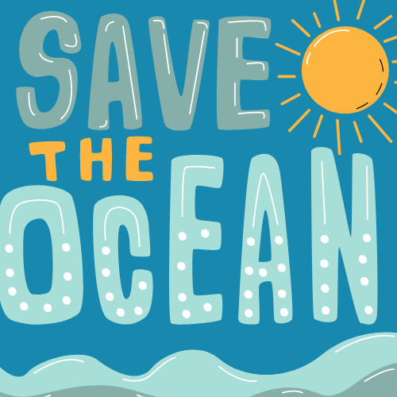
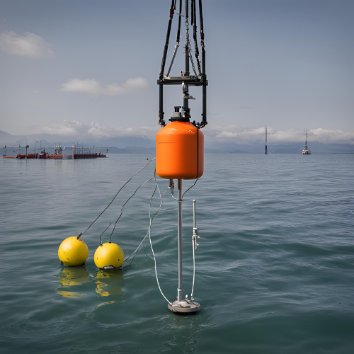
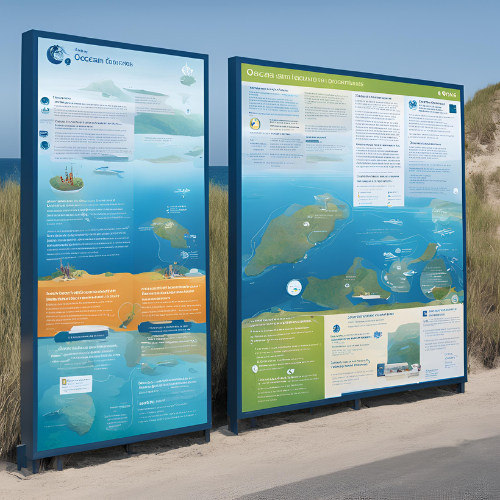
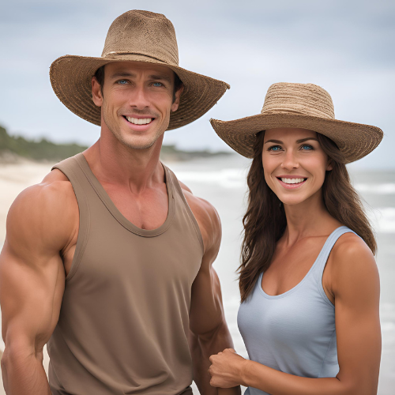
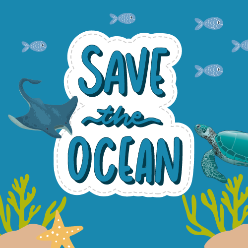
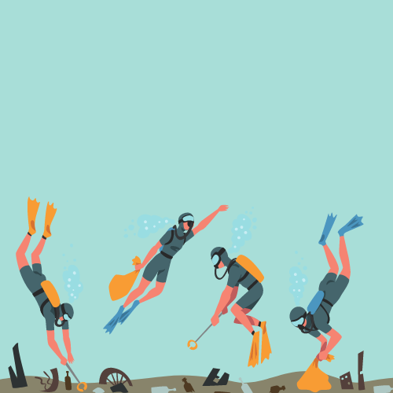

O Problema
O desafio de "Inovação Azul" tem como objetivo juntar a tecnologia, inovação e sustentabilidade para que juntas criem soluções que promovam uma gestão sustentável dos oceanos. No projeto teremos que alertar e informar as populações costeiras e as empresas que utilizam os mares para existência e subsistência sobre a saúde dos oceanos.
Tecnologia Utilizada
Implementação de boias equipadas com sensores básicos para medir variáveis essenciais como temperatura da água, pH e níveis de turbidez.
Criação de um portal web simples onde comunidades e empresas podem acessar informações sobre a saúde dos oceanos, boas práticas e regulamentos ambientais, nesse site também terão alertas e avisos quando as pessoas acessarem alguma página, nesses avisos terão ideias e sugestões de proteção.
Lançamento de um programa onde voluntários utilizam kits de teste de água para medir parâmetros básicos e reportar os resultados.
Instalação de painéis informativos em locais estratégicos nas comunidades costeiras, exibindo informações sobre a saúde dos oceanos e boas práticas.
Objetivos
O objetivo deste projeto é monitorar e melhorar a saúde dos oceanos, aumentar a conscientização ambiental e promover práticas sustentáveis através de:
1. Monitoramento Contínuo: Utilização de boias equipadas com sensores para medir a qualidade da água em tempo real.
2. Educação e Informação: Criação de um portal web e instalação de painéis informativos para fornecer dados sobre a saúde dos oceanos e boas práticas ambientais.
3. Engajamento Comunitário: Envolvimento de voluntários na coleta de dados ambientais com kits de teste de água.
4. Promoção de Sustentabilidade: Disseminação de informações e práticas sustentáveis para comunidades costeiras e empresas.
Essas iniciativas buscam proteger os ecossistemas marinhos e fomentar uma maior participação e responsabilidade ambiental entre as comunidades e empresas locais.
Público Alvo
Nosso público inclui ambientalistas, ONGs, governos locais, empresas, comunidades costeiras e turistas.
Benefícios
Os benefícios do projeto são:
1. Melhoria da Qualidade da Água: Monitoramento contínuo para detectar e mitigar problemas ambientais.
2. Aumento da Conscientização Ambiental: Educação das comunidades e turistas sobre práticas sustentáveis e a saúde dos oceanos.
3. Engajamento Comunitário: Participação ativa de voluntários na coleta de dados ambientais.
4. Suporte a Políticas Públicas: Dados robustos para fundamentar decisões e políticas de conservação.
5. Práticas Sustentáveis para Empresas: Informações que ajudam empresas locais a operar de forma mais sustentável.
6. Educação e Ciência Cidadã: Recursos educativos para escolas e universidades, promovendo uma nova geração de cidadãos conscientes.
Como Podemos Ajudar
A solução ajuda no dia a dia das pessoas ao:
1. Garantir Água Limpa: Monitoramento da qualidade da água para uso seguro e recreação.
2. Educar e Informar: Fornecer informações acessíveis sobre práticas sustentáveis e a saúde dos oceanos.
3. Engajar e Empoderar: Envolver a comunidade na proteção ambiental, promovendo responsabilidade e ação coletiva.
4. Apoiar Negócios Locais: Ajudar empresas a adotarem práticas mais sustentáveis, beneficiando a economia local.
5. Proteger a Natureza: Melhorar a saúde dos ecossistemas marinhos, que são essenciais para a pesca e o turismo.